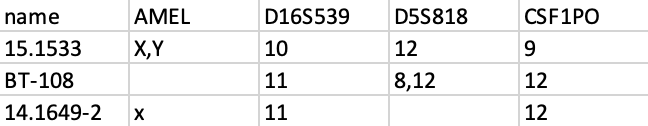
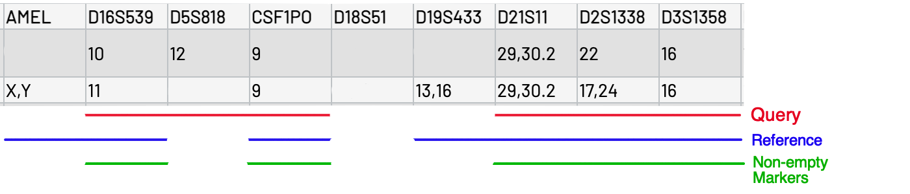

3. Changing the Reference Database
You can use the marker boxes to input individual markers without having to upload a formatted file. Just type the values into the corresponding boxes. To put in multiple allele values, separate the values with commas (Eg. 12,13). The input boxes can be used alongside the file upload. Uploading a file won't overwrite the query, nor will the query overwrite the file. When both forms of input are being used, the merker box query will always appear above the file queries with the cell line name "Query".
Accepted file types are .csv. A .csv file is like a basic form of excel file, so using working in an excel file then making a .csv copy is probably easiest.
Each row in the submitted file (except the header) is read as its own query. If a sample does not have data for a certain marker, it
should be left blank. A column called mod_id, Name, or Sample is required, and each query
must have a name. Put all data columns to the right of that column. The order of data columns does not matter, but the names must be correct.
If a sample does not have data for that column, leave the cell blank. Recognized names for amelogenin are Am, am,
AM, Amelogenin, amelogenin, AMEL, and amel. Enter data into cells the same
way it would be put into the marker boxes in section 1a, 'Marker Boxes'.

Example of a properly formatted table.
Formatting for query tables and custom reference database tables are the same. To upload queries, click Upload File next to Upload Query, or Upload Custom References for uploading custom references. When uploading a new file after a file of the same name has already been submitted, the tool doesn't recognize the new file as something different and will continue to use the old file. To avoid this, either make sure the new file has a different name, or press Upload File, then Cancel, and then upload the new file.
There are 3 different algorithms (Tanabe, Masters v. Query, and Masters v. Reference) used to calculate concordance that can be chosen using the radio buttons at the right.
The score is calculated using markers where both the reference and query have allele data.
The score is calculated using the markers that the query has data for, regardless of whether the reference has data.
The score is calculated using the markers that the reference has data for, regardless of whether the query has data.
Check the box labelled Amelogenin to include amelogenin in the score calculation. Amelogenin will appear in the results table whether or not the box is checked.
Submit a properly formatted table of references to Upload Custom References to use your own database instead of the one built in. If nothing is submited, the built in database will auomatically be used. If custom references are uploaded, the tool will use that instead of its own database.
To go back to using the default database after uploading, click Upload File next to Upload Custom References, then press Cancel on the pop-up. This clears the file upload tool, and then the default database will be used.
If the concordance score for a cell line is 80% or above, it be green. If the score is 60% to 79%, it will be orange. Scores below 60% are red.
Columns with missing query marker data will be put towards the end of the table.
On the final results table, amelogenin is written as 'AMEL.'